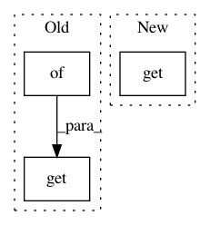

0e49e55d906660e5c9168447c77ebc6d917dda5c,examples/development/variants.py,,get_variant_spec,#Any#Any#Any#Any#,492
Before Change
),
"replay_pool_params": REPLAY_POOL_PARAMS,
"sampler_params": SAMPLER_PARAMS,
"run_params": deep_update(RUN_PARAMS_BASE, RUN_PARAMS.get(domain, {})),
}
return variant_spec
After Change
"sampler_params": {
"type": "SimpleSampler",
"kwargs": {
"max_path_length": MAX_PATH_LENGTH_PER_DOMAIN.get(
domain, DEFAULT_MAX_PATH_LENGTH),
"min_pool_size": MAX_PATH_LENGTH_PER_DOMAIN.get(
domain, DEFAULT_MAX_PATH_LENGTH),
"batch_size": 256,
In pattern: SUPERPATTERN
Frequency: 3
Non-data size: 3
Instances
Project Name: rail-berkeley/softlearning
Commit Name: 0e49e55d906660e5c9168447c77ebc6d917dda5c
Time: 2018-10-22
Author: hartikainen@berkeley.edu
File Name: examples/development/variants.py
Class Name:
Method Name: get_variant_spec
Project Name: rail-berkeley/softlearning
Commit Name: cfe2fda04c7de2e0ef4df609455ccbe81678bb56
Time: 2018-07-17
Author: kristian.hartikainen@gmail.com
File Name: examples/mujoco_all_sac.py
Class Name:
Method Name: run_experiment
Project Name: rail-berkeley/softlearning
Commit Name: 070259ba60b6623a3ff8db7b5f57c3972d0ff2b1
Time: 2018-07-17
Author: kristian.hartikainen@gmail.com
File Name: examples/mujoco_all_ray.py
Class Name:
Method Name: run_experiment